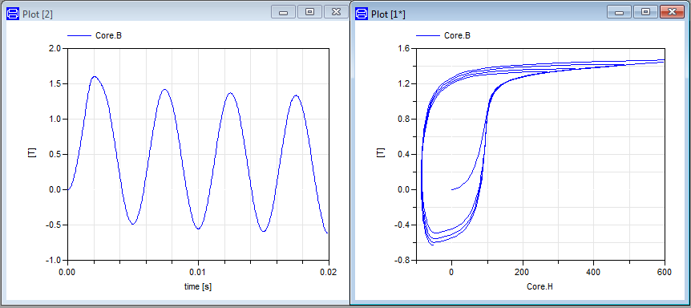
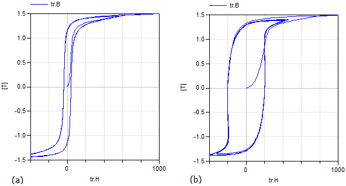

This icon indicates a package that contains executable examples.
Extends from Modelica.Icons.ExamplesPackage (Icon for packages containing runnable examples).
| Name | Description |
|---|---|
Components … | Components to be used in examples |
HysteresisModelComparison | Comparison of the different hysteresis models |
InductorWithHysteresis | |
SinglePhaseTransformerWithHysteresis1 | |
SinglePhaseTransformerWithHysteresis2 | |
ThreePhaseTransformerWithRectifier | 3 Phase transformer (including hysteresis effect) with rectifier |
Use the following simulation settings:
This example compares the behavior of three different hysteresis models due to the exact same input magnetic field strength. The three different models are:
Compared to the complex Preisach hysteresis model the Tellinen model is very simple and thus computationally more effective and stable. It is sufficient for many applications. But the Tellinen model has inherently a problem with small periodic input field variations at locations where the outer hysteresis loop has large slopes. In such a case, the simulated minor loops settle to the center of the hysteresis envelope curve, whereas the minor loops of the Preisach model stay constant ('property of equal vertical chords', [Ma03]). The input signal of the example (Fig. 1 a) corresponds to that case and Fig. 1 b-e shows the behavior of the different models.
|
|
Extends from Modelica.Icons.Example (Icon for runnable examples).
This is a simple model of an inductor with a ferromagnetic core. The used GenericHystTellinenEverett model considers the ferromagnetic hysteresis, eddy currents and remanence of the core material. For example you can simulate the model for 0.02s and plot Core.B vs. Core.H to visualize the resulting hysteresis loops.
|  |
Extends from Modelica.Icons.Example (Icon for runnable examples).
This simple model of an single phase transformer shows the inrush currents due to the remanence of the core material (M330-50A). For an accurate modelling of the core material the GenericHystTellinenTable hysteresis flux tube element is used. The initial magnetization MagRel of the Core component is set to 80%. Simulation settings:
Then plot the flux density of the Core Core.B over the magnetic field strength Core.H and additionally the time course of the primary and secondary current and e.g. the power consumption of the iron core Core.LossPower (see the following figures).

|

|
Extends from Modelica.Icons.Example (Icon for runnable examples).
A simple model of an single phase transformer (similar to SinglePhaseTransformerWithHysteresis1 but with separate transformer model: Transformer1PhaseWithHysteresis). Use the simulation settings:
The figure shows the magnetic hysteresis in the transformer core. In (a) the consideration of the eddy currents is switched off, in (b) it is enabled.
|  |
Extends from Modelica.Icons.Example (Icon for runnable examples).
This is a model of a three-phase transformer and rectifier unit using the Transformer3PhaseYyWithHysteresis model. Use the following simulation settings:
An example simulation shows the transformer inrush currents due to an initially magnetized transformer core.

|
Extends from Modelica.Icons.Example (Icon for runnable examples).
Generated 2018-12-12 12:10:56 EST by MapleSim.